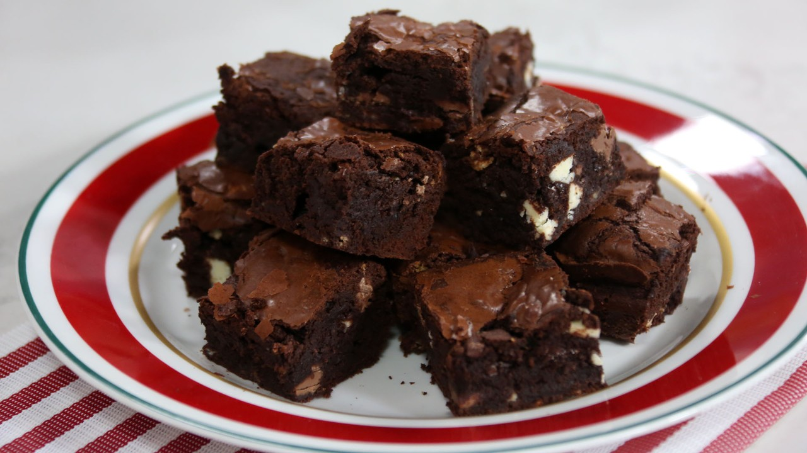

Pretty Damn Good Brownies

Description
These brownies are very special, but not in the way you're probably thinking.
Ingredients:
Brownies:
- 1/2 cup butter
- 1 cup white sugar
- 2 eggs
- 1 tsp vanilla extract
- 1/3 cup unsweetened cocoa powder
- 1/2 cup all purpose flour
- 1/4 tsp salt
- 1/4 tsp baking powder
Frosting:
- 3 tbsp butter, softened
- 3 tbsp unsweetened cocoa powder
- 1 tbsp honey
- 1 tsp vanilla extract
- 1 cup confectioners' sugar
Steps:
- Preheat oven to 350 degrees F (175 degrees C). Grease and flour an 8-inch square pan.
- In a large saucepan, melt 1/2 cup butter. Remove from heat, and stir in sugar, eggs, and 1 teaspoon vanilla. Beat in 1/3 cup cocoa, 1/2 cup flour, salt, and baking powder. Spread batter into prepared pan.
- Bake in preheated oven for 25 to 30 minutes. Do not overcook.
- Remove brownies from the oven, and make frosting. Combine 3 tablespoons softened butter, 3 tablespoons cocoa, honey, 1 teaspoon vanilla extract, and 1 cup confectioners' sugar. Stir until smooth.
- Frost brownies while they are still warm.